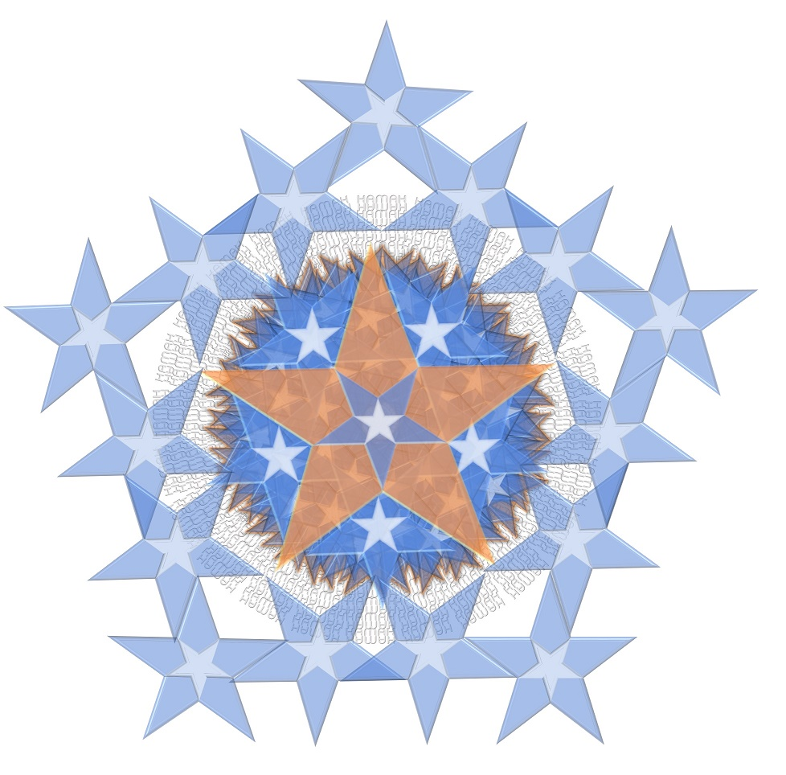

Реальный Мир и этот мир созданы в полном "подобии свойств", то есть копируют друг друга во всех деталях, отличие только в "знаке", или, как говорят каббалисты, в "материале желания получать", из которого "состоят" миры, то есть восприятие чувствующих существ и их осознание. Материал этого мира - не реален в том же самом смысле, в котором реально то, что он отражает, а поскольку "зеркалом" служит Разум, который на всех один, но будучи единственным, не отражает "реальность" своего фрагментированного временем носителя, реальность и нереальность мы видим с точностью от обратного, но, при этом, таким образом, что "отразить" "назад", сделав как бы проекцию, можем только тогда, когда вместо "прямого Света", отражаемого нашим зеркалом вовне, меняя источник отражения, возьмем Свет, уже "отраженный", и "отразив" его второй раз, получим "оригинал" в точности (ведь детали не меняются). Попробовав проделать это действие с зеркалами, Вы получите "дурную бесконечность". Но зеркальная поверхность - лишь подобие реального явления, свойства которого описаны выше. И мы сами являемся источниками отраженного Света, а не мир, который нам вокруг в этом Свете открывается. Мы сами состоим из времени. Каждый из нас является тем или иным набором связанных определенным образом свойств времени. Кастанеда называл это явление эманациями Орла.
Поэтому для достижения обратного эффекта, т.е. чтобы "отразить реальность нереальности", "открыть глаза", научившись "видеть", поняв, кто мы такие, где мы находимся, куда мы идем, откуда, зачем и так, зачем все это нужно, и что из этого следует, мы должны взять другое зеркало реального мира, и использовать его вместо "прямого Света", "заменив линзы" в своем собственном "отражательном приборе" таким образом, чтобы они отражали отраженный Свет другого зеркала вовне таким же образом, каким они до этого отражали прямой Свет "эманаций", делая из него "этот мир" и называя это Реальностью. Интересно?